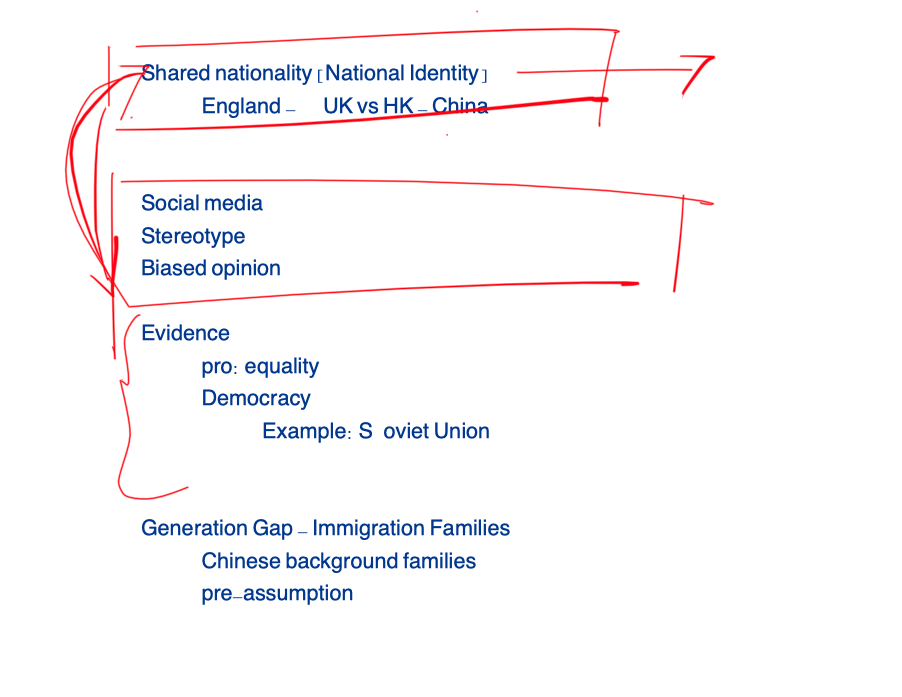

Identity, Evidence, and Passive Voice
We continued passive voice and used neutral, evidence-based vocabulary to discuss shared identity and social-media bias.
1. Passive voice from class
The annotated grammar page remains in your protected course material. The same class route is summarised below in original wording.
Open the protected Grammar Book and go to Unit 42 A–B.
Active: Social media platforms repeat some messages.
Passive: Some messages are repeated by social media platforms.
2. Shared identity and biased views

Class notes: identity, nationality, social media, stereotypes, evidence, immigration families, and generation gaps.
Writing ideas collected in class
Topic 1: How is a shared identity formed?
Topic 2: How can social media shape biased views of other countries or groups?
These were idea routes from discussion. They were not a completed essay or a separate writing method.
3. Key vocabulary
4. Use neutral academic language
Instead of That is weird, say:
- This view may be based on limited evidence.
- This description seems oversimplified.
- The claim may reflect a stereotype.
- A more objective explanation would compare several sources.